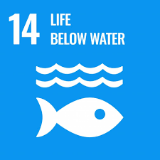
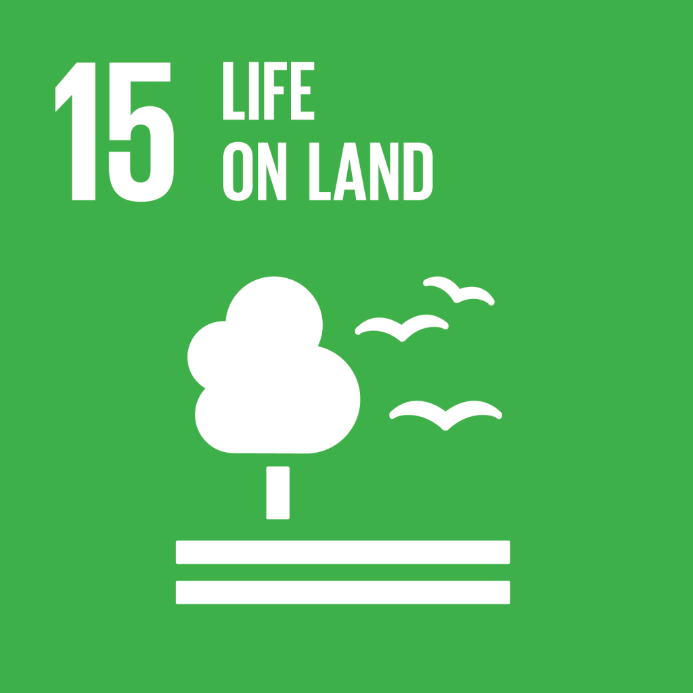
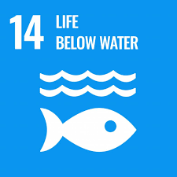
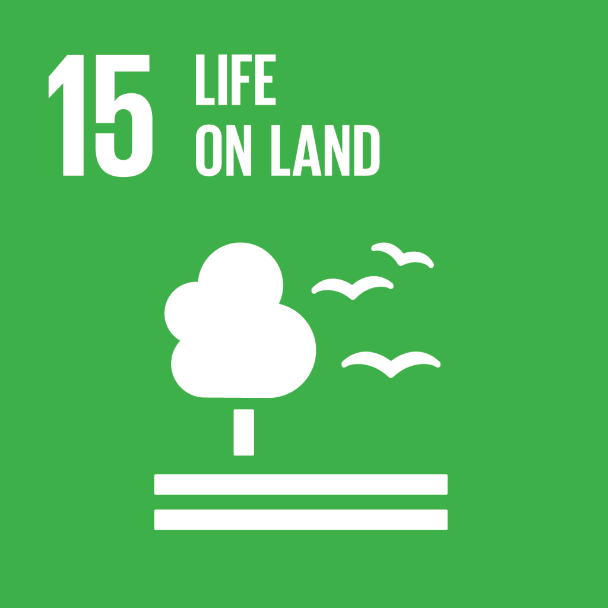

Mahasiswa Princeton Belajar Budaya dan Konservasi Indonesia di Banyuwangi.
Setelah perjalanan empat belas jam menggunakan kereta api dari Yogyakarta, pada tanggal 10 September 2019 delapan orang mahasiswa Princeton University (USA ) menapakkan kaki di Banyuwangi bersama 3 orang pendampingnya.
Last updated 3 mins ago
Keanekaragaman burung di Pertamina Tanjung wangi.
Keanekaragaman burung dapat dijadikan bio-indokator terhadap perubahan lingkungan yang terjadi pada habitat komunitas tersebut. Lalu bagaimana kondisi burung di kawasan urban khususnya dalam lingkungan perusahaan dengan
aktifitas manusia yang cukup tinggi?
Last updated 3 mins ago
Wahyu (IDS) Sigit Gelar Pameran Seni Foto Bertajuk “DRAGONFLY: Pengetahuan & Citra”
Pameran Seni Foto “DRAGONFLY: Pengetahuan & Citra”, karya Wahyu Sigit adalah kegiatan pameran seni foto yang akan menampilkan keragaman Capung yang ada di kawasan Nusantara.
Last updated 3 mins ago
 

More →


More →